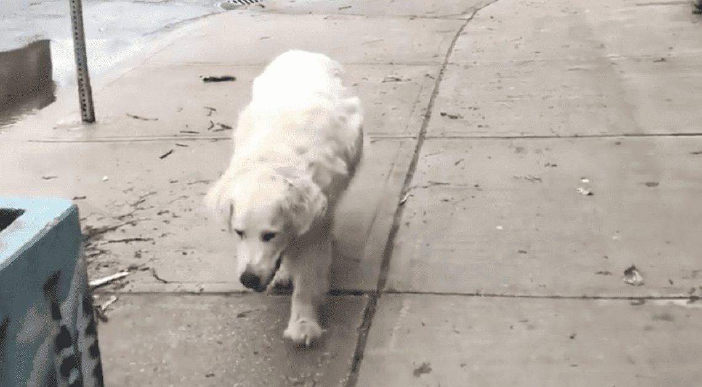

Senior Dog With Cancer Walked With His Man To The Vet And Drew His Last Breath

Saying goodbye to a beloved pet is never easy. The story of Dale Thompson took its stance to be one of the heartbreaking farewells spreading social media. This Toronto citizen was uttering a valediction to his 14-year golden retriever – Murphy – in big cries.

PHOTO:
@DALEETHOMPSON/TWITTER
Murphy had been battling with cancer that was all over his nose and throat. The last thing Thompson could do was to keep his dog happy until his last breath.

PHOTO:
@DALEETHOMPSON/TWITTER
The dog was taking his last walk to the vet, puffing out his breath on the way. Murphy was finally at peace in the sorrow of his man.
Murphy on his final walk
Written in his longer post on Medium, Thompson related memories when Murphy came to him and how they spent time in those 14 years, wetting people’s eyes by expressing how Murphy was meant to him. He said he would suffer cancer for Murphy, but the man can do no more than he can. He could only wish to see his dog on the other side.
Murphy was with his biggest smile ignoring pain from cancer

PHOTO:
@DALEETHOMPSON/TWITTER
When Thompson had himself crying hopelessly, it was Murphy who tried to get up and comforting his human as if he was saying he’d be there forever with Thompson. In the saddest grieve, Murphy left but his moments with Thompson stay. The owner affirmed that he would keep Murphy’s tag by his side to be close to him until the day he can unite with his lifetime companion.